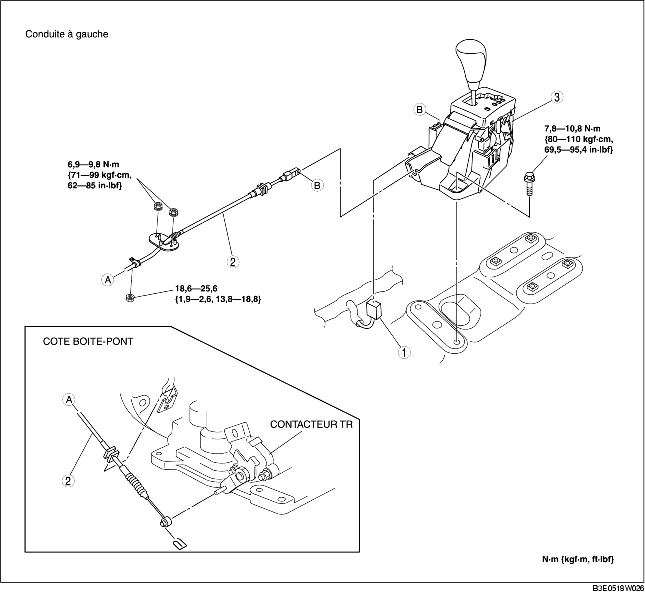
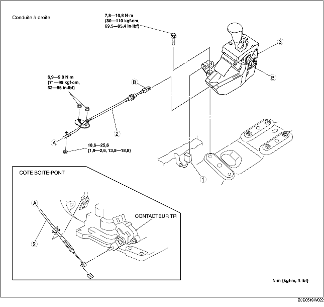

1. Déposer le couvercle de la batterie. (voir la section DEPOSE/REPOSE DE BATTERIE [ZJ, Z6].) (voir la section DEPOSE/REPOSE DE BATTERIE [LF].)
2. Débrancher le câble négatif de la batterie.
3. Déposer la batterie, le boîtier de batterie et le support de batterie. (voir la section DEPOSE/REPOSE DE BATTERIE [ZJ, Z6].) (voir la section DEPOSE/REPOSE DE BATTERIE [LF].)
4. Déposer le composant de filtre à air. (voir la section DEPOSE/REPOSE DE SYSTEME D'ADMISSION D'AIR [ZJ, Z6].) (voir la section DEPOSE/REPOSE DE SYSTEME D'ADMISSION D'AIR [LF].)
5. Déposer la console. (voir la section DEPOSE/REPOSE DE CONSOLE.)
6. Déposer l'isolateur thermique. (avant et central)
7. Déposer les différents éléments selon l'ordre indiqué dans le tableau.
8. Pour la repose, suivre l'ordre inverse de la dépose.


.
|
1
|
Cconnecteur de composant du levier de sélecteur
|
|
2
|
Câble de sélecteur
(voir la section Note sur la dépose du câble de sélecteur.)
(voir la section Note sur la repose du câble de sélecteur.)
|
|
3
|
Composant de levier de sélecteur
(voir la section Note sur la repose de composant de levier de sélecteur.)
|
1. Déposer l'attache.
2. Déposer le câble de sélecteur.
1. Insérer la goupille de fixation du composant de levier de sélecteur sur l'orifice du plancher.
2. Serre les boulons de fixation du composant de levier de sélecteur.
1. Reposer solidement le câble de sélecteur sur le levier de sélecteur.
2. Reposer solidement le câble de sélecteur sur le support.
3. Vérifier que le levier de sélecteur est sur la position P.
4. Bloquer la pièce bloquante et le verrou de sûreté du câble de sélecteur (côté levier de sélecteur) selon l'ordre indiqué dans l'illustration.
5. Vérifier que l'arbre à commande manuelle est dans la position P.
6. Reposer l'attache comme indiqué dans l'illustration.
7. Reposer le levier de sélecteur sur le levier de l'arbre à commande manuelle de telle manière que le câble de sélecteur ne supporte aucune charge.
8. S'assurer que l'extrémité du levier de l'arbre à commande manuelle sorte de l'extrémité du câble de sélecteur.
9. Reposer solidement le câble de sélecteur sur le support du câble de sélecteur.